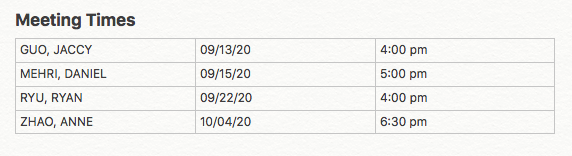
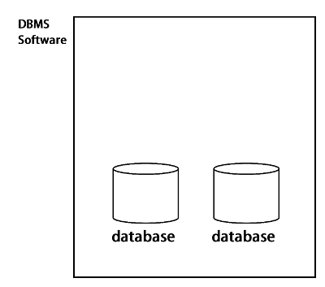

Basics of Databases
Consider all the organizations you've registered with in your lifetime. They probably range from non-essential services like Facebook and Reddit, to much more important ones such as banking and education. Regardless of what you signed up for, it's a guarantee that your personal information has been stored somewhere. And it doesn't just stop with registration data. Sports teams keep track of player statistics, shops record daily transactions, there are infinite possibilities with the kinds of data we might want to save for future access and analysis. As you might have guessed, the most effective storage medium used to accomplish this are databases.
What is a database?
At its core, a database is simply an organized collection of data. It may come as a surprise, but databases don't need to be stored on hardware to be classified as one. Physical paper-based databases are definitely a thing and were much more common in the past (e.g. phonebooks, ledgers). What really defines a database is the fact that the data is kept in a organized manner, and not just scribbled down without any structure.
For example, consider this email. Would you classify the included meeting data as organized?
Probably not. Even though the information is useful, it's not really organized at all. However if we extracted the data and formatted it into a table...

Seems pretty organized to me! This could be labeled as a valid database ✅
How about something like an Excel spreadsheet then? Going by our original definition, you could definitely identify a well organized spreadsheet as a database. However, we are tech folk! When we talk and think about databases, we probably aren't visualizing Excel or Google Sheets. The databases we mull over are a lot more than just simple data containers. They should support efficient queries. They should keep the data clean. They should be secure. All these critical features aren't available with databases alone. We need to include an extra piece in our database mental model with Database Management Systems.
Database Management Systems (DBMS)
A DBMS is a type of software that allows users and applications to interact with one or more databases. The databases themselves hold the actual data while the DBMS surrounds them and enforces rules that address important data maintenance issues, such as data integrity and security. Together, databases and DBMS' are known as database systems, and is actually what most people are alluding to when they talk about "databases".

For the rest of the article we'll also be using the word "database" to refer to database systems, so keep that in mind!
Why do we need databases?
So far we've briefly touched on some of the benefits databases bring to the table. But what specifically separates a database from other storage mediums like spreadsheets? Here are some of the main reasons we love databases!
Efficient Storage: Databases are able to store an enormous number of records in very little space. Spreadsheets however do not have the same storage optimizations.
Efficient Operations: Databases are optimized to make operations like creating, reading, updating, and deleting data very quick. Spreadsheets are otherwise likely to require much more time and effort to accomplish the same tasks.
Data Integrity: Data integrity describes the accuracy and consistency of your data. One of the most prevalent issues with using spreadsheets is how easy it is to make mistakes when creating, updating, and deleting data. Imagine entering names into a spreadsheet containing employee information. If you were careless, you might accidentally enter someone's name twice, or even write their date of birth instead.

A spreadsheet doesn't prevent you from making these mistakes, but databases can! Databases are capable of validating the integrity of the data, through the specification of a schema. You can think of a schema as a blueprint that outlines constraints that the stored data must adhere to, resulting in much less redundant, missing, and incorrect information.
Safe Concurrent Access: When multiple users are simultaneously accessing a database, the database ensures that each user's operations don't interfere with one another. On the other hand, spreadsheets give no guarantee of such safety. Imagine hundreds of users accidentally overwriting each others changes on a spreadsheet. The result could be potentially disastrous with cases of inconsistent or missing data.
Security: Databases make it much safer to deal with sensitive data. Users can be given different permissions that determine what kinds of database operations they're allowed to conduct. You don't necessarily want all users to have complete control over a database, and you definitely don't want to risk exposing private information to the public.
Conclusion
Now that you have an idea of what databases are, the difference between databases and DBMS, and why we use databases, we can look more deeply into the different types of databases that exist. Read on!